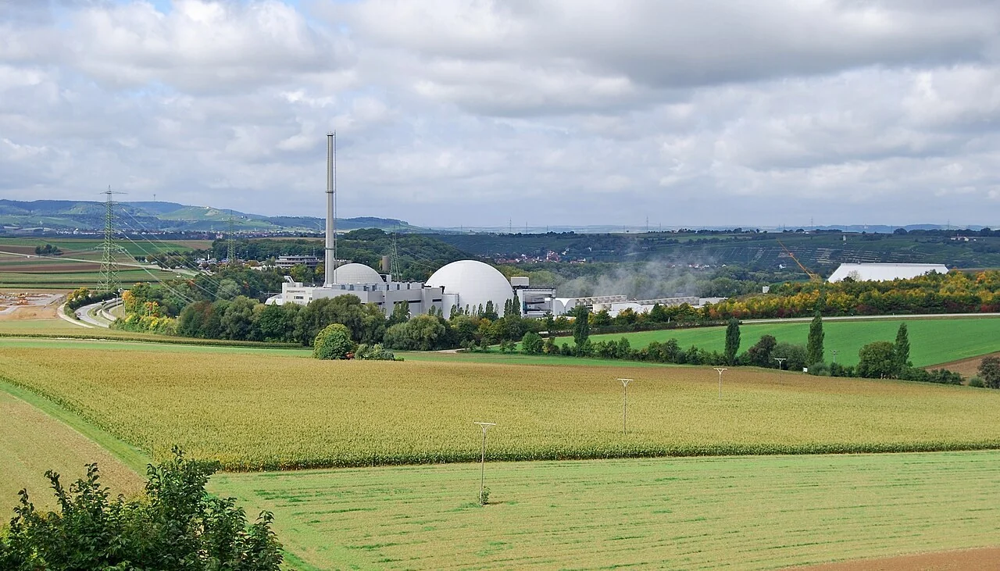
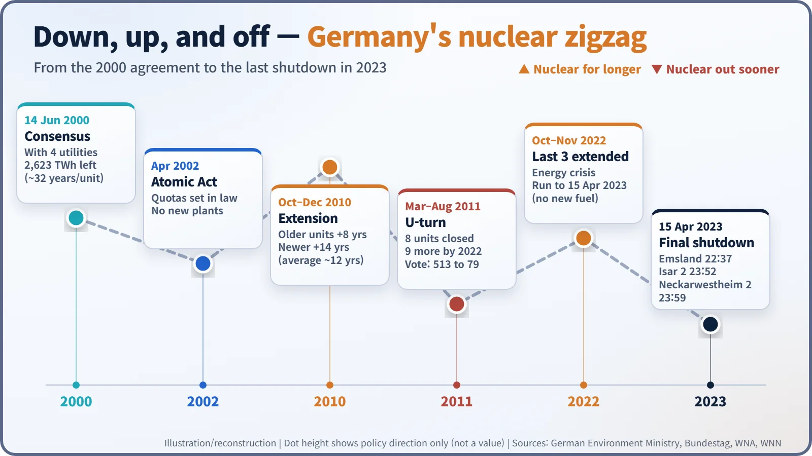
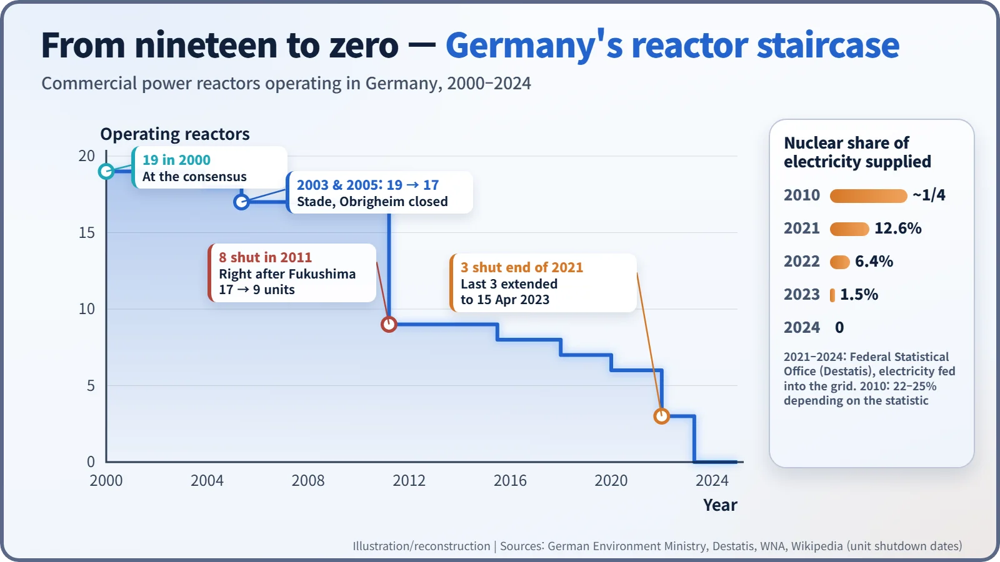
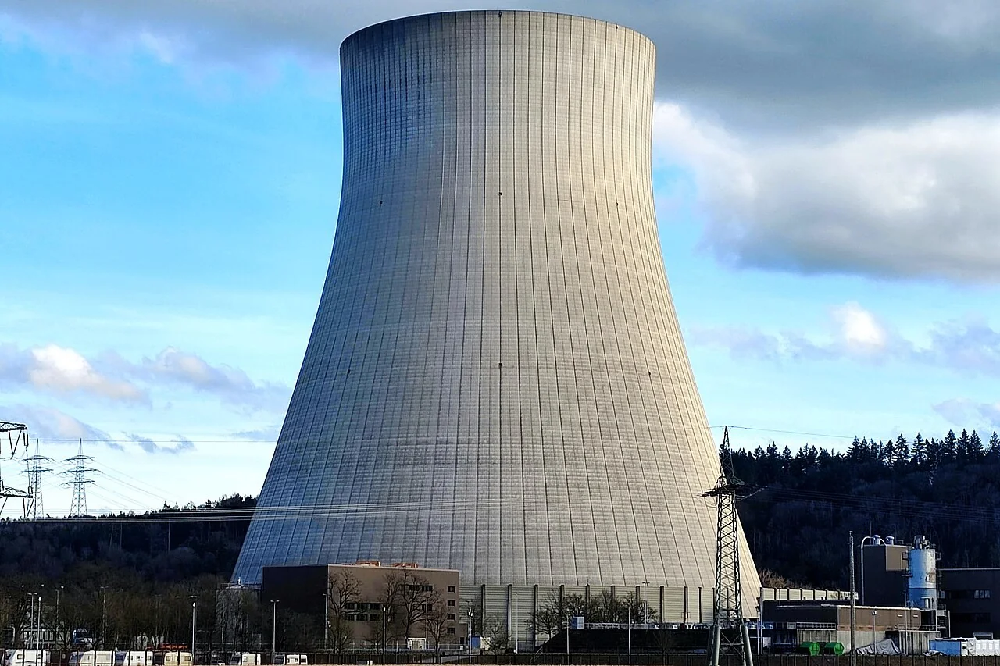

Nuclear History · 283
One Minute to Midnight — Germany's Nuclear Phase-Out and Its 23-Year Zigzag (2000–2023)
A 2,623 TWh output budget, a 12-year extension, a post-Fukushima U-turn and a last-minute stretch-out ended at 23:59 on 15 April 2023.
Germany agreed in 2000 to phase out nuclear power by giving each reactor a fixed amount of electricity it could still produce. In 2010 it extended reactor lifetimes by about 12 years on average, and after the Fukushima accident in 2011 it reversed course and set an end date of 2022. A final extension during the 2022 energy crisis kept the last three plants running until 15 April 2023.
One minute to midnight
On the night of Saturday 15 April 2023, at the Neckarwestheim power station in south-west Germany, the clock reached 23:59 and the generator was disconnected from the grid. A little over an hour earlier, Emsland in the north had gone first (22:37); seven minutes earlier, Isar 2 in Bavaria had followed (23:52). With one minute of the day to spare, commercial nuclear power in Germany was over. [4]
The road to that minute was anything but straight. Germany decided to wind nuclear power down, then wound it back up, then down again, and finally paused once more just before the end.

2000: a phase-out measured in kilowatt-hours
Germany had one of the strongest anti-nuclear movements in Europe, going back to the site occupations of the 1970s. In 1998 a coalition of Social Democrats and Greens came to power, and Chancellor Gerhard Schröder (1944–) opened talks with the four big utilities. On 14 June 2000 they reached the "nuclear consensus" (Atomkonsens). [1]
The deal was unusual. Instead of fixing a closing date for each plant, it fixed how much electricity each plant could still produce. For the 19 reactors then operating, the remaining output added up to 2,623 terawatt-hours (TWh), roughly 32 years of operation per unit on average. Think of it as a prepaid data plan: once a plant had used up its allowance, it closed. Allowances could even be transferred between plants. [2]
An amendment to the Atomic Energy Act turned the agreement into law in 2002 and banned the construction of new commercial nuclear plants. Stade closed in November 2003 and Obrigheim in May 2005, leaving 17 reactors running.
2010: turning the clock back
In 2009 Angela Merkel (1954–) formed a new coalition of Christian Democrats and Free Democrats, and the direction changed. In autumn 2010 parliament approved lifetime extensions: 8 extra years for reactors that started before 1980 and 14 years for newer ones, about 12 years on average. In return the utilities agreed to pay a nuclear fuel tax of €145 per gram of fissile material. [2]
2011: the U-turn
Less than five months after that vote, on 11 March 2011, the Fukushima Daiichi accident began in Japan. On 14 March Merkel announced a three-month moratorium on the extension, and the next day the seven reactors that had started before 1980 were taken offline. Together with Krümmel, which had been standing idle since 2009, that made eight.
Two reviews followed. The Reactor Safety Commission (RSK) examined the plants technically, and an Ethics Commission for a Safe Energy Supply, 17 members led by former environment minister Klaus Töpfer and research-funding chief Matthias Kleiner, asked whether society should accept the risk. According to the World Nuclear Association's summary, the RSK found the plants basically sound; the Ethics Commission, in its report of 30 May 2011, recommended leaving nuclear power. The government decided the same day to close every reactor by 2022.
On 30 June 2011 the Bundestag passed the law by 513 votes to 79, with 8 abstentions; the opposition Social Democrats and Greens voted in favour. When it took effect on 6 August, the eight reactors lost their licences to operate for good, and the remaining nine were given staggered closing dates between 2015 and the end of 2022. [2] [6]

Courts, compensation and an energy crisis
The utilities went to court. On 6 December 2016 the Federal Constitutional Court ruled that the phase-out was essentially compatible with the Basic Law, but that investments made in reliance on the 2010 extension, and some output allowances that could no longer be used, had to be compensated. In March 2021 the government and four companies settled on about €2.4 billion. [1] [2]
Then, in February 2022, Russia invaded Ukraine. With Russian gas supplies falling and the winter ahead, and with three more reactors already closed at the end of 2021, Chancellor Olaf Scholz in October ordered the last three plants to keep running until 15 April 2023. On 11 November 2022 the Bundestag wrote this into law by 375 votes to 216, with 70 abstentions. It was a "stretch-out" operation: no new fuel, just the fuel already in the reactors. [3]

The scorecard after the lights went out
According to the Federal Statistical Office (Destatis), nuclear's share of the electricity fed into the grid was 12.6% in 2021, 6.4% in 2022 and 1.5% in 2023, and zero in 2024. In 2010 it had been about a quarter (22–25%, depending on the statistic). [5]
Assessments differ. One economic study published in 2020 estimated that the lost nuclear output was replaced mainly by coal-fired generation and electricity imports, at a social cost of roughly €3–8 billion a year, much of it from air pollution. Coal generation also rose during the 2022 energy crisis. On the other hand, renewables grew rapidly over the same period, reaching 59.4% of the electricity supplied in 2024, and supporters of the phase-out stress that the accident risk is gone and that no more high-level waste is being produced. [6]

The last three plants have now entered decommissioning, a process their operators expect to take 10 to 15 years. What the 23-year zigzag shows is that energy policy is not only a matter of engineering numbers. It is also a choice about which risks a society is willing to accept, and how much of them. [4]